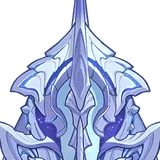

Chương IV · Màn V
Vũ Điệu Của Tội Lỗi
Nhiệm vụ Ma Thần — Fontaine
Nhân vật xuất hiện
 Nhân vật chính · Nhà Lữ HànhLumineNhà Lữ Hành đến từ thế giới khác. Bị vị thần lạ mặt phong ấn và cướp mất người anh song sinh, cô bắt đầu hành trình đi tìm Bảy Vị Thần của Teyvat.
Nhân vật chính · Nhà Lữ HànhLumineNhà Lữ Hành đến từ thế giới khác. Bị vị thần lạ mặt phong ấn và cướp mất người anh song sinh, cô bắt đầu hành trình đi tìm Bảy Vị Thần của Teyvat. Bạn đồng hànhPaimonĐược Lumine cứu khỏi chết đuối hai tháng trước, Paimon tự nhận làm người dẫn đường cho cô. Hay ăn, hay nói, và rất ghét bị gọi là “thực phẩm dự trữ”.
Bạn đồng hànhPaimonĐược Lumine cứu khỏi chết đuối hai tháng trước, Paimon tự nhận làm người dẫn đường cho cô. Hay ăn, hay nói, và rất ghét bị gọi là “thực phẩm dự trữ”.- Hội trưởng Spina di RosulaNaviaCùng Lumine khám phá phiến đá tiên tri tại di tích Poisson và giữ vai trò trợ lý công tố trước tòa.
- Thủy Long Vương · Thẩm Phán Tối CaoNeuvilletteTiếp nhận toàn bộ Quyền Năng Thủy Long sau cái chết của Focalors, xá tội cho người dân Fontaine và dẹp yên đại hồng thủy.
 “Thủy Thần” suốt 500 nămFurinaGiữ vững lời hẹn ước cô độc suốt năm trăm năm trên sân khấu nhân thế trước khi được giải thoát khỏi vai diễn.
“Thủy Thần” suốt 500 nămFurinaGiữ vững lời hẹn ước cô độc suốt năm trăm năm trên sân khấu nhân thế trước khi được giải thoát khỏi vai diễn.- FMa Thần Thủy · Thần Công LýFocalorsBản thể thần tính ẩn trong Cỗ Máy Chỉ Thị; tự hiến tế chính mình và ngai Thủy Thần để cứu toàn dân Fontaine khỏi lời tiên tri.
 Công Tước Pháo Đài MeropideWriothesleyKhởi hành con tàu Wingalet cứu vớt toàn bộ cư dân Fontaine trong trận đại hồng thủy.
Công Tước Pháo Đài MeropideWriothesleyKhởi hành con tàu Wingalet cứu vớt toàn bộ cư dân Fontaine trong trận đại hồng thủy.- Y tá trưởng Pháo Đài MeropideSigewinneHỗ trợ kiểm chứng phản ứng của Furina trước Nước Biển Khởi Nguyên pha loãng.
 Quan Chấp Hành Fatui “Người Hầu”ArlecchinoChi viện vật tư cho Thị Trấn Poisson và tiếp nhận Gnosis Thủy từ Neuvillette sau thảm họa.
Quan Chấp Hành Fatui “Người Hầu”ArlecchinoChi viện vật tư cho Thị Trấn Poisson và tiếp nhận Gnosis Thủy từ Neuvillette sau thảm họa.- Ảo thuật gia Căn Nhà Hơi ẤmLyneyChế tạo cái bẫy hộp ảo thuật đưa Furina lên vành móng ngựa và tham gia cứu nạn Poisson.
 Thành viên Căn Nhà Hơi ẤmLynette · FreminetTìm lại phiến đá tiên tri đầu tiên bị thất lạc và góp sức cứu hộ trong đại hồng thủy.
Thành viên Căn Nhà Hơi ẤmLynette · FreminetTìm lại phiến đá tiên tri đầu tiên bị thất lạc và góp sức cứu hộ trong đại hồng thủy.- Đấu Sĩ Đại DiệnClorindeSẵn sàng nghênh chiến trên sân khấu ép Furina đối diện phiên xét xử.
 Nhà chiêm tinh học từ MondstadtMonaKết nối liên lạc tới sư phụ Barbeloth và Ma Nữ “N” Nicole để giải mã lỗ hổng lời tiên tri.
Nhà chiêm tinh học từ MondstadtMonaKết nối liên lạc tới sư phụ Barbeloth và Ma Nữ “N” Nicole để giải mã lỗ hổng lời tiên tri. Ma Nữ “N” · Hội Ma Nữ (âm thanh)NicoleTruyền âm gợi ý cho Lumine tại Fleuve Cendre về bản chất không thể thay đổi trên bề mặt của lời tiên tri.
Ma Nữ “N” · Hội Ma Nữ (âm thanh)NicoleTruyền âm gợi ý cho Lumine tại Fleuve Cendre về bản chất không thể thay đổi trên bề mặt của lời tiên tri.- Phóng viên Chim Hơi NướcCharlotteGhi lại những hình ảnh và chứng từ lịch sử của đại hồng thủy Fontaine.
- Sư phụ của ChildeSkirkXuất hiện thu hồi Thôn Tinh Kình Ngư và tiết lộ bản chất Gnosis là di vật của Kẻ Đổ Bộ Thứ Ba.

Dị thú ngoài tinh cầuThôn Tinh Kình NgưĐột nhập Viện Ca Kịch Epiclese và bị Lumine cùng Neuvillette hợp lực đánh bại. Quan Chấp Hành Fatui (cắt cảnh)ChildeKiệt sức sau trận chiến kéo dài chống Thôn Tinh Kình Ngư trước khi được Skirk đưa đi.
Quan Chấp Hành Fatui (cắt cảnh)ChildeKiệt sức sau trận chiến kéo dài chống Thôn Tinh Kình Ngư trước khi được Skirk đưa đi.- MTùy tùng đã khuất của NaviaMelus và SilverXuất hiện bảo vệ Navia dưới hình dạng Tinh Linh Nước Trong giữa dòng Nước Biển Khởi Nguyên.
Các phần
- Phần 1Thảm Họa Thủy Triều
- Phần 2Tương Phùng Cũng Là Ly Biệt
- Phần 3Thợ Săn Và Tiên Tri
- Phần 4Ngày Phán Quyết
- Phần 5Vở Kịch Của Sóng Đen Và Sương Trắng
- Phần 6Bế Mạc
Toàn bộ lời thoại được lấy từ bản tiếng Việt chính thức của trò chơi. Ở những đoạn người chơi được chọn câu trả lời, truyện chọn một lựa chọn duy nhất.